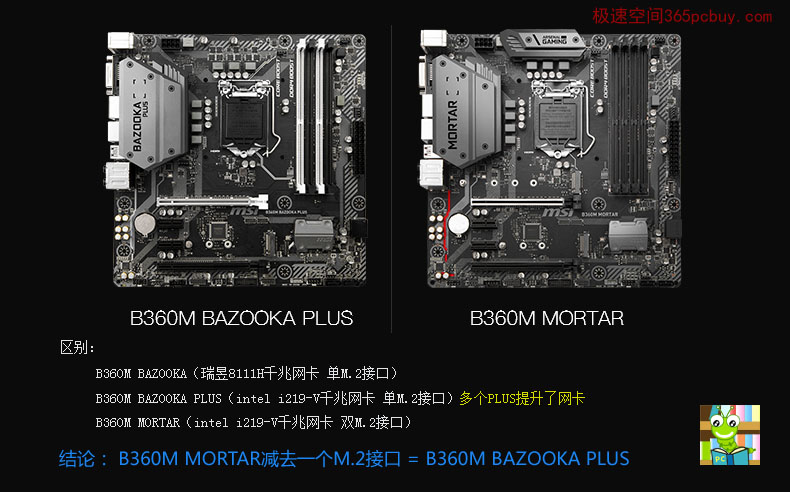

同样999元,GTX1650和RX580 2048SP性价比谁更好？买显卡还需考虑5个隐藏成本
发表时间：2019-11-10 文章浏览次数：2165 作者：pc小虫
此文章最后更新日期2019年11月12日
这不仅仅是一个主板排行榜，也是一篇主板选购知识的科普文章。
你知道B360M PRO-VH 、B360M GAMING PLUS的含义吗？
你知道微星军火库系列：BAZOOKA（火箭筒）、BAZOOKA PLUS（火箭筒加强）、 MORTAR（迫击炮）、TOMAHAWK（战斧导弹）之间有什么区别吗？ 下面介绍十款性价比 较高的主板，看了简评后上面的问题就清楚了。
提示：买【CPU+主板】套餐要比单买CPU或主板更便宜。
一线主板性价比（套装）排行榜（按价格由低到高顺序，AMD和intel平台不分先后）
NO1：微星华硕B450M 大师系列
双11价格：1199元
双11价格：1356元
简评：二代锐龙价格诱人，算下来CPU不到800元，说实在，真有点羡慕现在购买锐龙的用户。R5-3500X刚上市不久，风头正劲。
NO2：微星B450M PRO系列
推荐套餐：R5-2600X（免费升级到R7-2700）+微星B450M PRO-VDH MAX 查看>>
双11价格：1319元
推荐套餐：R5-3600+微星B450M PRO-VDH MAX 查看>>
双11价格：1756元
简评：特别注意PRO系列有很多细分型号主板，最大区别在于内存插槽数量。其中，搭配PRO M.2套餐是1299元，建议多加20元选带四根插槽的PRO-VDH，后期扩展性更好。
CPU方面，目前R5-2600/2600X/2700最划算，R5-2400G的情况有点危险，虽然内置了显卡，性能却只能当GT1030，对付稍微大点的3D游戏就吃力，不如买R5-2600加二手GTX750Ti显卡了。B450只比B350贵一点，能更好的支持锐龙三代。
锐龙性价比高，同价格下速度比intel快，但没想到跌价速度也快，就在上半年，仅仅一颗R7-2700还要1700多元，现在带主板才1299元。
NO3：微星 B450M军火库系列（ MORTAR迫击炮、BAZOOKA PLUS 火箭筒增强）
推荐套餐：
R5-2600X（免费升级R7-2700）+微星B450M迫击炮 MAX 查看>>
双11价格：1469元
双11价格：1905元
简评：迫击炮和火箭筒都属于军火库系列，这是微星主板的中档主力部队，二者配置相同，都有M.2 PCI-E 3.0接口，主要区别是B450M迫击炮多了一个M.2接口(PCI-E 2.0 X4)，由于需要双M.2接口的用户少，这个接口用处不大，实际选择可以看二者的差价而定。
NO4：华硕 TUF B450M系列
推荐套餐：
R5-2600X+华硕TUF B450M-PLUS GAMING 查看>>
双11价格：1199元
R5-3500X+华硕TUF B450M-PLUS GAMING 查看>>
双11价格：1405元
简评：华硕B450M 电竞特工和微星B450M迫击炮真是一对冤家，都定位是中档电竞主板，做工同样精良，都有PCI-E装甲，都有炫光，网卡都是 RTL8111H，相似点很多，容易出现选择困难症。二者主要区别是B450M迫击炮多了一个M.2(PCI-E 2.0X4），而B450M TUF如果需要多加一个M.2，也可以通过转接卡实现。考虑到用两块M.2的情况不多，要选择很简单，一个是根据自己对品牌的喜爱，主要还看看谁的活动力度大，哪款价格更低，我自己买华硕B450M TUF的原因是遇到商家活动，价格比迫击炮低了近100元。
intel平台
NO5：微星H310M系列
推荐型号： H310M PRO-VDH PLUS 查看>> 支持win7
简评：300系列主板大部分都不支持win7系统，由于有市场需求，不少工厂推出了支持win7的型号。
微星H310M的整个系列都具备很高性价比，这也是我们装机大湿实体店装机的 主流型号，微星全系列H310主板都采用了7相（4+2+1）供电，这是厚道的做法，没有因为H310的定位而简化供电。此型号也带PCI-E装甲。
微星的H310系列 ，只要后缀带PLUS系列（不包含H310M-GAMING-PLUS），就支持win7，而B360带PLUS就不行，需要B365主板才支持。
注：目前UHD630、UHD620都有兼容驱动，因此选择i3-8100\G5600都可以装win7用核显，但UHD610还不行。
名称解读： GAMING代表微星的GAMING系列（游戏系列），PLUS含义是“加 ”，出现在主板型号中，通常是“增强”的含义，即增加了配置，或者某个部分提升了档次。
NO6：华硕H310M系列
推荐套餐：i3-9100F + 华硕H310M-E 查看>>
价格：889元（套餐四）
简评：华硕H310M系列有几款不同型号，-K、-E、-D等，主要区别是外置接口不同。H310M-E、-D具备M.2接口（-K没有），最高为20Gb/s，20Gb/s则相当于2.46GB/s，这个带宽对于高端NVME固态来说，稍有不足，使用三星970EVO会有少许瓶颈，但对于大量的中高端型号都没问题。
NO7：微星 B360M PRO/WIND系列
简评：微星 B360M WIND实质也属于PRO系列，不同渠道换个名字，本质相同，这样的情况很常见。WIND同样有PCI-E装甲，板载显卡接口缩减到VGA，这对用独显没有影响，但用核心显卡则要考虑和显示器接口适配，否则还需要买转换线。
从PRO系列的名称即可知道主板采用了什么显卡接口：B360M PRO-VD含义是采用intel B360的芯片组，M为M-ATX小板型，PRO代 表微星的商用行业系列，VD则代表主板配置了VGA和DVI接口，可以说微星的主板代号 是非常清晰易读。用独显通常不需要关心主板的显卡输出接口，而如果用核心显卡，则 要注意主板的接口和显示器接口适配。
推荐套餐：i3-9100F+微星 B360M WIND 查看>>
价格：999元
推荐套餐：i5-9400F+微星 B360M PRO-VH 查看>>
价格：1399元
NO8：华硕B360M、B365M大师系列
推荐套餐：i5-9400F + 华硕B365M-K 查看>>
价格：889元（套餐四）
简评：要intel九代i5、华硕主板、还要顺利安装WIN7，价格还不能太贵，就选它。
NO9：微星B360M、B365M军火库系列
注：B365M原生支持WIN7，但少一个M.2接口，这得根据实际需求再定。
推荐套餐：
i5-9400F+微星B360M MORTAR 双M .2接口 查看>>
活动价格：1599元
简评：这微星这两款基本上可以看做是同一款。微星军火库系列又分为： BAZOOKA（火箭筒）、 MORTAR（迫击炮）、TOMAHAWK（战斧导弹），分别对应中、中高 和高三个小层次，如果我们以星级来表示，则对应三星、四星和五星，现实中战斧导弹 的威力是最大的对标五星，如果说火箭筒比迫击炮威力差了点，那么弄个火箭筒加强版 （BAZOOKA PLUS）比迫击炮如何？还真有这个型号。
二者的区别就是B360M火箭筒PLUS是单M.2接口，而迫击炮为双M.2。由此看出，工厂实际上 就把迫击炮的两个M.2接口减少了一个，然后换了名称。
因此：B360M火箭筒PLUS加一个M.2接口≈B360M迫击炮
其中这个PLUS则是网卡的升级，从瑞昱8111H升级到intel i219V，（注意，这个网 卡升级仅仅是对微星这款产品，并不是有PLUS就代表网卡升级）
这么分析就清楚了，选哪款就看价格差距。

NO10：华硕 TUF B360M-PLUS GAMING S 电竞特工
简评：华硕TUF特种部队系列本身定位中高，由于竞争需要，华硕调整策略，衍生出TUF GAMING系列。华硕的名气大，要买名气大的主板，低端看不上高端钱不够怎么办？于是TUF自然以相对合理的价格取得了不错的销量，这款主板的竞争对手是上面的微星B360M迫击炮或B360M火箭筒加强版。
主板的型号确实有点复杂，多一个字母配置就不同个，TUF B360M-PLUS GAMING 和TUF B360M-PLUS GAMING S就差一个S，有S的主板多了一个M.2接口，可以支持Wi-Fi/BT 模块。
推荐套餐：
i5-9400F+华硕TUF B360M-PLUS GAMING S 1549元 查看>>
活动价格：1549元